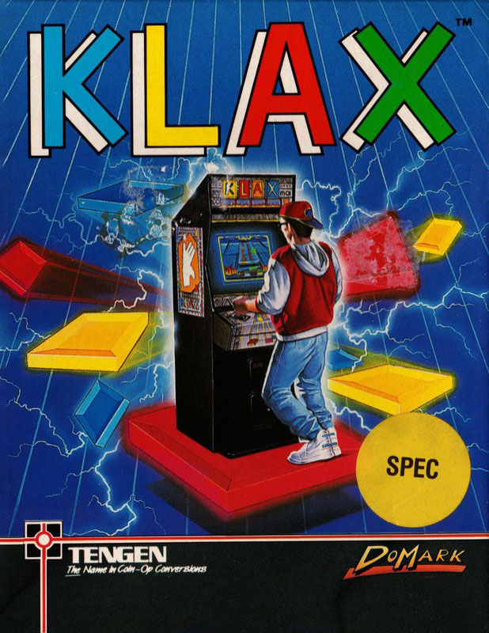
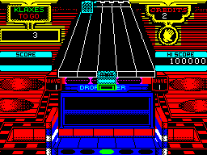

Klax


{kind=link}

| Publisher: | Domark |
| Price: | £9.99 / £14.99 |
| Year: | 1990 |
| Source: | CRASH, Issue 77 |

According to Domark Klax is a collection of three same-coloured tiles stacked either vertically, horizontally or diagonally. The aim of this game is simple: create the set number of Klaxs on each level to move onto the next. Before the fun begins the player is given the choice to start on either the level one with three drops and no bonus, level six with four drops and 100000 points bonus or level eleven with five drops and 200000 point bonus. You’re then whisked to the play screen, a long vertical stretch of play area and five ‘bins’. You control a flipper and must catch the differently coloured tiles as they roll towards you.

Up to five tiles can be held on the flipper at one time, though the idea is to sling them into the bins as fast as possible. But watch it: unless you create Klaxs the bins fill very quickly and the game ends; drop more than your allowed number of tiles, and it’s over too. If you think the first couple of screens are easy, just wait until the tiles Increase in speed and number and the amount of Klaxs needed to continue rockets up. Panic situations are all too common, and a cool head Is needed: ‘throw’ the tiles back up the screen for a few seconds if a breathing space is needed.
It takes a lot of practice to avoid quick termination, but this doesn’t detract from the sheer playability — indeed it adds to long term addictivity. If you’re into puzzle/arcade games (and even if you’re not) you’ll kick yourself if you don’t take a look at this latest Domark release.
MARK — 94%
What makes Klax so addictive is the sheer simplicity of it. You get so frustrated when the computer decides to send down every colour but the one you want to complete your super cross which will get you millions of points, you just have to have another go!
NICK — 90%
RATING
A cracking coin-op conversion to tease and frustrate: just get that straight-jacket ready!
| Presentation: | 89% |
| Graphics: | 86% |
| Sound: | 70% |
| Playability: | 90% |
| Addictivity: | 91% |
| Overall: | 92% |